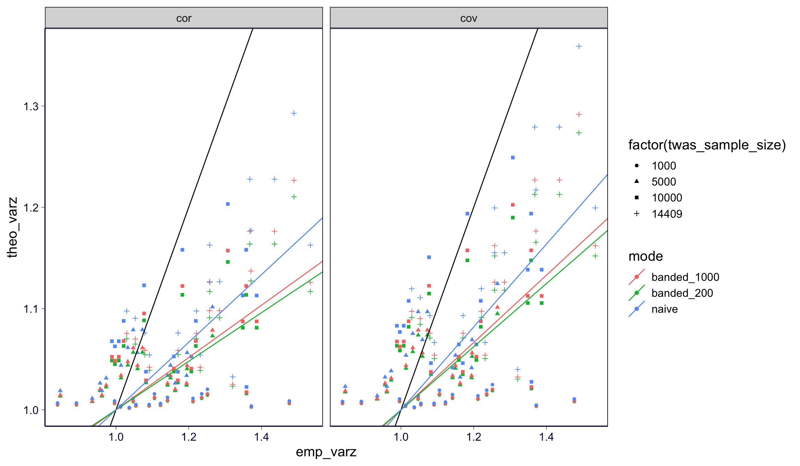
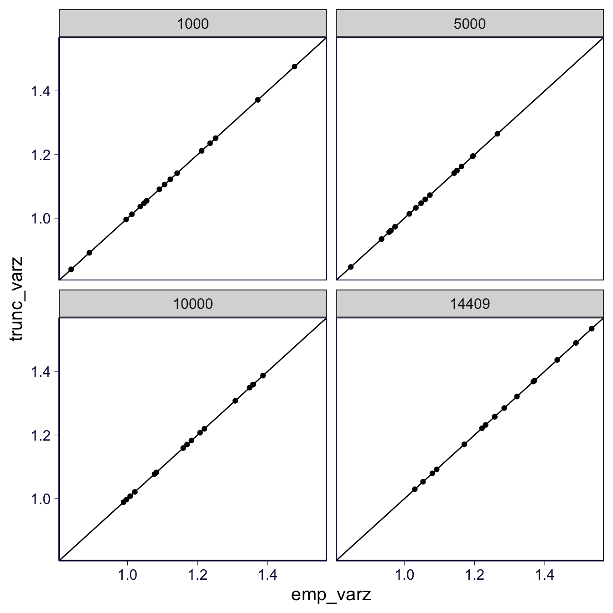
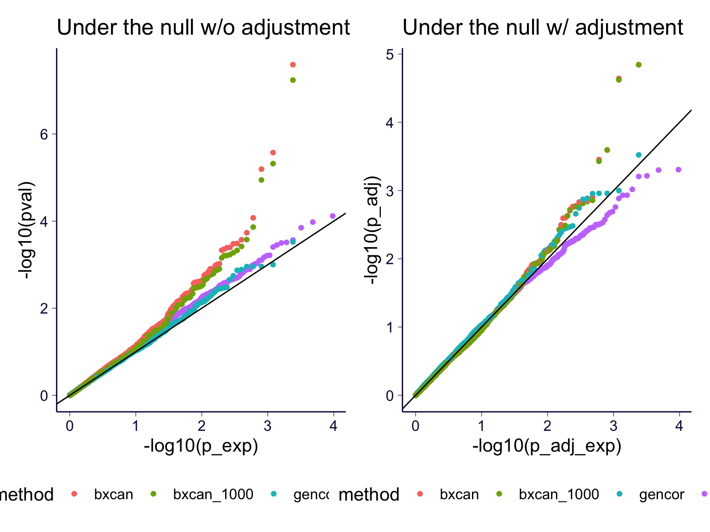
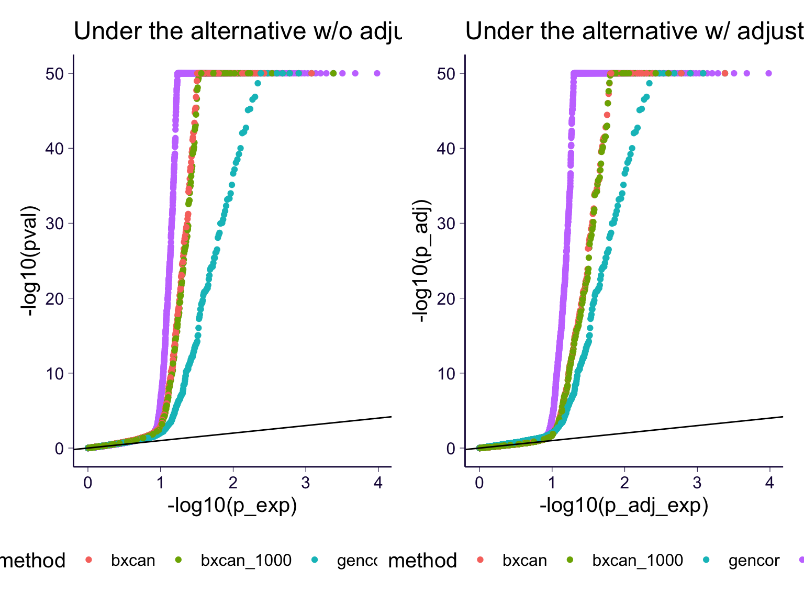
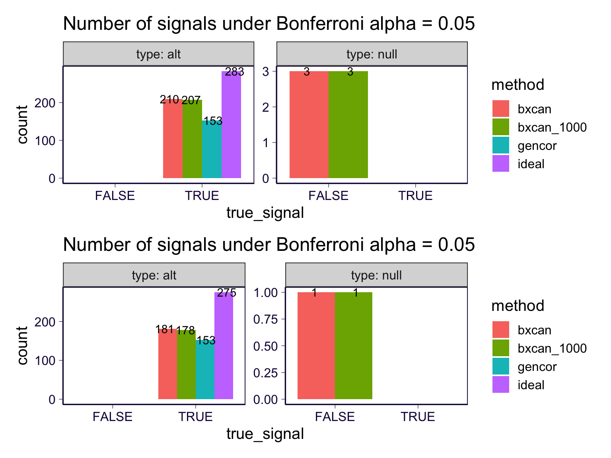

rm(list = ls())
library(arrow)
library(ggplot2)
theme_set(theme_bw(base_size = 15))
source('https://gist.githubusercontent.com/liangyy/43912b3ecab5d10c89f9d4b2669871c9/raw/3ca651cfa53ffccb8422f432561138a46e93710f/my_ggplot_theme.R')
source('https://gist.githubusercontent.com/liangyy/489d1519dd45246caf4756d7722bfa25/raw/9bbb39b80243325b7930083063566fae4af85d48/fast_linear_regression')
library(dplyr)
options(stringsAsFactors = F)
library(patchwork)
library(data.table)
options(datatable.fread.datatable = F)
source('rlib.R')\[ \newcommand{\cov}{\text{Cov}} \newcommand{\var}{\text{Var}} \newcommand{\cor}{\text{Cor}} \newcommand{\pve}{\text{PVE}} \]
See details and scripts at submission/simulation/. I re-use the same simulated data as simulation_gw.Rmd. But here, I focus on inflation under the null. For method ideal, I also vary the sample size. For other bxcan approach, the sample size is fixed (1,4409) by the design of the previous simulation study.
Estimating inflation:
\[\begin{aligned} \var(z) &= \sigma^2 \\ \text{Find $\sigma^2$ such that} & \\ v &= \sigma^2 (1 + \frac{-2 \phi(\frac{c}{\sigma})}{1 - 2 \Phi(-\frac{c}{\sigma})}) \\ \Phi(x) &= \Pr(Z \le x) \\ \phi(x) &= \frac{1}{\sqrt{2 \pi}}\exp(-\frac{1}{2}x^2) \end{aligned}\]
load_bxcan <- function(fn) {
kk <- read.csv(fn)
return(kk[, 1:3])
}
get_n <- function(s, n, func = as.numeric) {
return(unlist(lapply(strsplit(s, '_'), function(x) {func(x[n])})))
}
get_h2 <- function(s) {
return(get_n(s, 4))
}
get_m <- function(s) {
return(paste0('m_', get_n(s, 2)))
}
get_z <- function(pval, eff) {
- qnorm(pval / 2) * sign(eff)
}Load S-BrainXcan and LDSC based genetic correlation results.
twas_sample_size <- 14409
h2s <- c(0.3, 0.5, 0.7, 0.9)
pves <- c(0.3, 0.5, 0.7, 0.9)
types <- c('null', 'alt')
rands <- 1 : 5
datadir <- '/Users/yanyuluchicago/Desktop/tmp/ukb_idp/simulation'
df <- list()
for(h2 in h2s) {
for(pve in pves) {
for(type in types) {
for(rand in rands) {
fn_b <- glue::glue('{datadir}/bxcan/param1.group_group1.rand_{rand}.ridge_x_rand_{rand}.oy.{type}_h2_{h2}_pve_{pve}_x_simagexcan.csv')
fn_b_1000 <- glue::glue('{datadir}/bxcan_1000/param1.group_group1.rand_{rand}.ridge_x_rand_{rand}.oy.{type}_h2_{h2}_pve_{pve}_x_simagexcan.csv')
fn_g <- glue::glue('{datadir}/gen_cor/group1.rand_{rand}_x_group2_x_rand_{rand}.oy.{type}_h2_{h2}_pve_{pve}.ldsc_rg.log')
kk_b <- load_bxcan(fn_b)
kk_b_1000 <- load_bxcan(fn_b_1000)
kk_g <- load_ldsc_rg(fn_g)
kk_b <- kk_b %>%
filter(get_h2(IDP) == h2) %>%
mutate(m = get_m(IDP)) %>%
rename(eff = bhat) %>%
select(m, eff, pval)
kk_b_1000 <- kk_b_1000 %>%
filter(get_h2(IDP) == h2) %>%
mutate(m = get_m(IDP)) %>%
rename(eff = bhat) %>%
select(m, eff, pval)
kk_g <- kk_g %>%
filter(get_h2(p2) == h2) %>%
mutate(m = get_m(p2)) %>%
rename(pval = p, eff = rg) %>%
select(m, eff, pval)
kk <- rbind(
kk_b %>% mutate(method = 'bxcan'),
kk_g %>% mutate(method = 'gencor'),
kk_b_1000 %>% mutate(method = 'bxcan_1000'))
df[[length(df) + 1]] <- kk %>% mutate(h2 = h2, pve = pve, type = type, rand = rand)
}
}
}
}
df <- do.call(rbind, df)
df$twas_sample_size <- twas_sample_size
df_eff <- list()
for(rand in rands) {
fn <- glue::glue('{datadir}/simulate_phenotypes/param1.rand_{rand}.mediator_effect.parquet')
kk <- read_parquet(fn)
kk$mediator <- as.numeric(kk$mediator)
df_eff[[length(df_eff) + 1]] <- kk %>%
mutate(rand = rand) %>%
rename(m = mediator) %>%
mutate(m = paste0('m_', m))
}
df_eff <- do.call(rbind, df_eff)
df <- left_join(df, df_eff, by = c('m', 'rand'))Run the BrainXcan results under the ideal case (associating the true genetic component of a mediator and the phenotype).
twas_ns <- c(1000, 5000, 10000, 14409)
df_ideal <- list()
for(rand in rands) {
df_gmed <- read_parquet(glue::glue('{datadir}/simulate_phenotypes/param1.group_group2.rand_{rand}.gmed.parquet'))
df_yobs <- read_parquet(glue::glue('{datadir}/simulate_phenotypes/param1.group_group2.rand_{rand}.oy.parquet'))
df_indiv <- df_gmed[, 1, drop = FALSE]
df_yobs <- left_join(df_indiv, df_yobs, by = 'individual')
fast_lm_on_ys <- function(ymat, xmat) {
res <- list()
for(i in 1 : ncol(ymat)) {
y <- ymat[, i]
tmp <- fast_linear_regression(y, xmat, matrix(1, nrow = length(y), ncol = 1))
res[[length(res) + 1]] <- data.frame(
y = colnames(ymat)[i],
x = names(tmp$bhat),
bhat = tmp$bhat,
pval = tmp$pval)
}
res <- do.call(rbind, res)
rownames(res) <- NULL
return(res)
}
for(twas_n in twas_ns) {
idx <- sort(sample(1 : twas_sample_size, twas_n))
res <- fast_lm_on_ys(
df_yobs[idx, -1] %>% as.matrix(),
df_gmed[idx, -1] %>% as.matrix())
res <- res %>% mutate(
h2 = get_n(y, 3),
pve = get_n(y, 5),
type = get_n(y, 1, as.character))
df_ideal[[length(df_ideal) + 1]] <- res %>% mutate(rand = rand, twas_sample_size = twas_n)
}
}
df_ideal <- do.call(rbind, df_ideal)
df_all <- rbind(
df_ideal %>%
mutate(method = 'ideal') %>%
rename(eff = bhat, m = x) %>%
select(m, eff, pval, method, h2, pve, type, rand, twas_sample_size) %>%
left_join(df_eff, by = c('m', 'rand')),
df)
df_all$h2_pheno <- df_all$pve * df_all$h2
# min_p <- 1e-50
# df_all$pval[df_all$pval < min_p] <- min_p
# df_all$pval[df_all$pval > 1 - min_p] <- 1 - min_p
df_all <- df_all %>%
mutate(z = get_z(pval, eff)) %>%
group_by(method, type, rand, h2) %>%
mutate(p_exp = rank(pval, ties.method = 'random') / (n() + 1)) %>%
ungroup()Loading the inflation factor from LD
df_ld_inflat <- list()
types <- c('cov', 'cor')
modes <- c('banded_200', 'banded_1000', 'naive')
intermediate_factor <- 1000
for(t in types) {
for(m in modes) {
fn <- glue::glue('{datadir}/calc_inflation/{m}_{t}.tsv')
tmp <- read.table(fn, header = T)
TrR <- sum(tmp$TrR / intermediate_factor)
TrRtR <- sum(tmp$TrRtR / intermediate_factor ^ 2)
ld_factor <- TrRtR / TrR ^ 2
df_ld_inflat[[length(df_ld_inflat) + 1]] <- data.frame(type = t, mode = m, ld_factor = ld_factor)
}
}
df_ld_inflat <- do.call(rbind, df_ld_inflat)est_slope <- function(x, y) {
x0 <- x - 1
y0 <- y - 1
mod <- lm(y0 ~ x0 - 1)
mod_sum <- summary(mod)
return(data.frame(slope = mod_sum$coefficients[1, 1]))
}
df_emp_varz <- df_all %>%
filter(type == 'null', method == 'ideal') %>%
group_by(h2, h2_pheno, twas_sample_size, method) %>%
summarize(emp_varz = var(z), nrepeat = n()) %>%
ungroup()## `summarise()` has grouped output by 'h2', 'h2_pheno', 'twas_sample_size'. You can override using the `.groups` argument.tmp <- merge(df_emp_varz, df_ld_inflat) %>% mutate(theo_varz = 1 + h2_pheno * twas_sample_size * ld_factor)
tmp_slope <- tmp %>% group_by(mode, type) %>%
do(est_slope(.$emp_varz, .$theo_varz))
tmp %>% ggplot() +
geom_point(aes(
x = emp_varz, y = theo_varz,
color = mode, shape = factor(twas_sample_size))) +
facet_wrap(~type) +
geom_abline(slope = 1, intercept = 0) + th2 +
geom_abline(
data = tmp_slope,
aes(slope = slope, intercept = 1 - slope,
color = mode))
tmp_slope %>% pander::pander()| mode | type | slope |
|---|---|---|
| banded_1000 | cor | 0.2583 |
| banded_1000 | cov | 0.3326 |
| banded_200 | cor | 0.2398 |
| banded_200 | cov | 0.3118 |
| naive | cor | 0.3338 |
| naive | cov | 0.4092 |
find_bounds <- function(x, func, step_size = 1.001) {
low <- x
if(func(low) > 0) {
message('something is wrong')
return(NA)
}
high <- low
while(func(high) <= 0) {
high <- high * step_size
}
return(c(low, high))
}
varz_from_truncated_zscore <- function(zscores, cutoff) {
c <- abs(cutoff)
z_trunc <- zscores[abs(zscores) < c]
if(length(z_trunc) < 50) {
message('Too few weak observations')
return(NA)
}
v <- var(z_trunc)
obj <- function(s) {
phi_c <- dnorm(c / s)
Phi_neg_c <- pnorm(-c / s)
s ^ 2 * (1 + - 2 * phi_c * c / s / (1 - 2 * Phi_neg_c)) - v
}
bounds <- find_bounds(sqrt(v), obj)
# bounds <- c(sqrt(v), 100 * sqrt(v))
res <- uniroot(obj, bounds)$root
return(res ^ 2)
}Use truncation cutoff = 6.
df_trunc_varz <- df_all %>%
group_by(h2, h2_pheno, twas_sample_size, method, type) %>%
summarize(
trunc_varz = varz_from_truncated_zscore(z, cutoff = 6),
emp_varz = var(z), nrepeat = n()) %>%
ungroup()## `summarise()` has grouped output by 'h2', 'h2_pheno', 'twas_sample_size', 'method'. You can override using the `.groups` argument.Compare empirical z-score variance versus the one estimated from z-score truncation. Limit to ideal under the null.
df_trunc_varz %>%
filter(method == 'ideal', type == 'null') %>%
ggplot() +
geom_point(aes(x = emp_varz, y = trunc_varz)) +
geom_abline(slope = 1, intercept = 0) +
facet_wrap(~twas_sample_size) + th2
Adjust z-score by dividing z-score by the squared root of z-score variance estimated via z-score truncation.
df_trunc_varz$trunc_varz_min1 <- pmax(df_trunc_varz$trunc_varz, 1)
df_trunc_varz$trunc_varz_min1[df_trunc_varz$method == 'gencor'] <- 1
df_adj <- left_join(
df_all, df_trunc_varz,
by = c('h2', 'h2_pheno', 'twas_sample_size', 'method', 'type'))
df_adj <- df_adj %>% mutate(z_adj = z / sqrt(trunc_varz_min1)) %>%
mutate(p_adj = 2 * exp(pnorm(abs(z_adj), lower.tail = F, log.p = T)))
min_p <- 1e-50
df_adj$pval[df_adj$pval < min_p] <- min_p
df_adj$pval[df_adj$pval > 1 - min_p] <- 1 - min_p
df_adj$p_adj[df_adj$p_adj < min_p] <- min_p
df_adj$p_adj[df_adj$p_adj > 1 - min_p] <- 1 - min_p
df_adj <- df_adj %>%
# group_by(h2, h2_pheno, twas_sample_size, method, type) %>%
group_by(method, type) %>%
mutate(
p_adj_exp = rank(p_adj, ties.method = 'random') / (n() + 1),
p_exp = rank(pval, ties.method = 'random') / (n() + 1)) %>%
ungroup()
p1 <- df_adj %>%
filter(type == 'null') %>%
ggplot() +
geom_point(aes(x = -log10(p_exp), y = -log10(pval), color = method)) +
geom_abline(slope = 1, intercept = 0) + th +
ggtitle('Under the null w/o adjustment') +
theme(legend.position = 'bottom')
p2 <- df_adj %>%
filter(type == 'null') %>%
ggplot() +
geom_point(aes(x = -log10(p_adj_exp), y = -log10(p_adj), color = method)) +
geom_abline(slope = 1, intercept = 0) + th +
ggtitle('Under the null w/ adjustment') +
theme(legend.position = 'bottom')
p1 + p2
p1 <- df_adj %>%
filter(type == 'alt') %>%
ggplot() +
geom_point(aes(x = -log10(p_exp), y = -log10(pval), color = method)) +
geom_abline(slope = 1, intercept = 0) + th +
ggtitle('Under the alternative w/o adjustment') +
theme(legend.position = 'bottom')
p2 <- df_adj %>%
filter(type == 'alt') %>%
ggplot() +
geom_point(aes(x = -log10(p_adj_exp), y = -log10(p_adj), color = method)) +
geom_abline(slope = 1, intercept = 0) + th +
ggtitle('Under the alternative w/ adjustment') +
theme(legend.position = 'bottom')
p1 + p2
Power under Bonferroni
p_cutoff <- 0.05
df_adj$true_signal <- df_adj$beta != 0
df_adj$true_signal[df_adj$method == 'null'] <- FALSE
p1 <- df_adj %>%
filter(twas_sample_size == 14409) %>%
group_by(method, type) %>%
filter(pval < p_cutoff / n()) %>%
ggplot() +
geom_bar(aes(x = true_signal, fill = method), position = 'dodge') +
facet_wrap(~type, scales = 'free_y', labeller = label_both) + th2 +
ggtitle('Number of signals under Bonferroni alpha = 0.05') +
geom_text(stat='count', aes(x = true_signal, label=..count.., group = method), position = position_dodge(1))
p2 <- df_adj %>%
filter(twas_sample_size == 14409) %>%
group_by(method, type) %>%
filter(p_adj < p_cutoff / n()) %>%
ggplot() +
geom_bar(aes(x = true_signal, fill = method), position = 'dodge') +
facet_wrap(~type, scales = 'free_y', labeller = label_both) + th2 +
ggtitle('Number of signals under Bonferroni alpha = 0.05') +
geom_text(stat='count', aes(x = true_signal, label=..count.., group = method), position = position_dodge(1))
p1 / p2